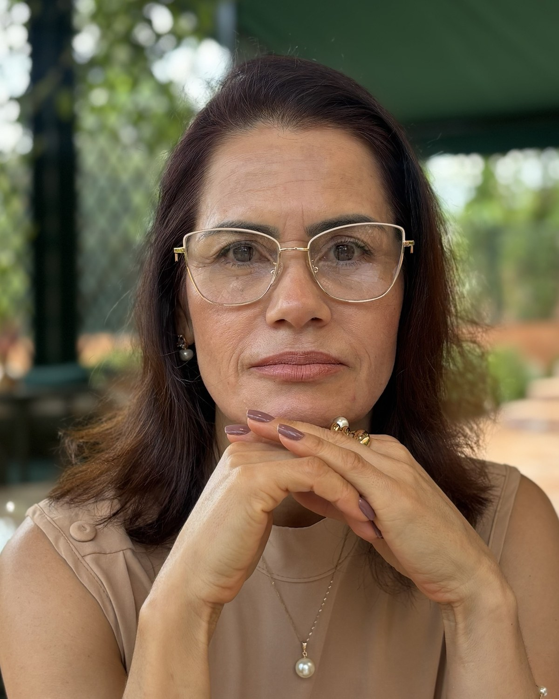

Você passa por três ferramentas, DISC, âncoras de carreira e forças pessoais, e recebe uma devolutiva individual comigo.
Mentoria em grupo para líderes
Altum é uma mentoria em grupo para líderes, gestores e empresários que já entregam resultado e sabem que o próximo nível exige outra forma de liderar. São 6 meses de jornada, com método, ciência do comportamento e aplicação na rotina.
Online, com encontros práticos presenciais em Rio Verde, GO
Se pelo menos uma delas pesou aí, a gente precisa conversar.
Eu acompanho líderes há mais de 20 anos e vou te contar o que vejo com frequência: gente muito competente, que trabalha mais do que todo mundo, presa no mesmo patamar.
O motivo quase nunca é falta de esforço.
Desempenho não se constrói com cobrança. Ele se constrói com clareza, com conversas bem conduzidas e com uma equipe que sabe o que é excelência porque alguém ensinou.
Esse é o trabalho da Altum.
Por que Altum
Altum vem do latim. Escolhi esse nome porque ele carrega as duas coisas que eu trabalho com cada líder: subir de nível e, pra isso, ir mais fundo em quem você é quando lidera.
As ondas dentro do A falam disso: o que sobe precisa de profundidade embaixo.
O que a gente trabalha
Durante os 6 meses, você desenvolve as competências que mais pesam no dia a dia de quem lidera: da forma como você pensa resultado até a formação de quem vai liderar depois de você.
Cada tema chega com conteúdo, prática e um compromisso de aplicação até o próximo encontro. Você não sai com anotação, sai com tarefa.
Para quem é
Como funciona
Você passa por três ferramentas, DISC, âncoras de carreira e forças pessoais, e recebe uma devolutiva individual comigo.
A gente se encontra 3 vezes por mês, online, pra trabalhar os 8 temas da mentoria.
Cada tema vem com ferramentas pra você aplicar na rotina entre um encontro e outro.
Você leva o que trabalhamos pra sua equipe, e a gente se encontra presencialmente em Rio Verde, GO, pra aprofundar.
Cada encontro termina com um compromisso de aplicação, e eu acompanho a sua evolução ao longo dos 6 meses.

Quem conduz
Psicóloga, Executive Business Coach e especialista em gestão de pessoas. Há mais de 20 anos eu estudo o que faz um líder desenvolver alta performance, com olhar na neurociência e no comportamento humano.
Meu trabalho é trocar conselho por ciência e dado, e garantir que o que a gente constrói tenha aderência na rotina.
Eu acredito que tudo pode mudar através de uma conversa. E já vi isso acontecer muitas vezes.
byClênia OliveiraResultados
Uma operação de granjas de suínos com alta rotatividade, baixa produtividade e conflitos crônicos passou por uma jornada de desenvolvimento de 6 meses comigo. Ficou entre as melhores por 4 anos seguidos e, em outubro de 2026, o cliente me ligou pra contar: chegaram ao 1º lugar do Ranking Global Genético de Granjas Suínas.
Investimento
6 meses da Mentoria Altum
Tudo que era R$ 13.500,00
R$2.997
ou 12 x R$310,08
Quero garantir minha vagaMesma entrega, mas com
40% off
O valor da mentoria é R$ 4.997. Até 12 de novembro, às 23h59, você entra por R$ 2.997.
Os dois. São 3 encontros por mês, a maior parte online, pra caber na sua rotina de líder. Ao longo dos 6 meses, a gente também se encontra presencialmente em Rio Verde, GO, porque tem coisa que só acontece olho no olho.
No começo da jornada, você passa por três ferramentas: DISC, âncoras de carreira e forças pessoais. Depois, eu faço uma devolutiva individual com você, online, pra gente entender como você decide, comunica e reage sob pressão.
Não. A Altum serve pra quem lidera duas pessoas ou duzentas. O que muda é a aplicação, e isso a gente ajusta junto.
[política de reposição: se os encontros online ficam gravados, se há reposição]
[fluxo de inscrição: botão de pagamento, formulário de aplicação ou conversa no WhatsApp]
O que decide isso é o líder que estiver na frente dela.